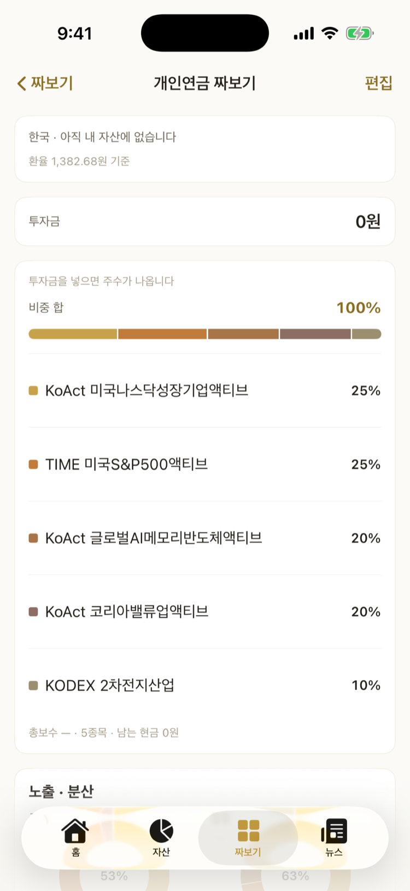

아직 내 자산이 아닌 구성
짜보기에서 만든 조합은 실제 자산이 아닙니다. 「내 자산에 넣기」를 누르기 전까지는 화면에 아직 내 자산에 없습니다라고 붙어 있고, 자산 합계에도 들어가지 않습니다. 마음 놓고 이리저리 바꿔 봐도 됩니다.
순서
- 새로 짜보기를 누르고 이름과 시장(한국 · 미국 · 둘 다)을 정합니다. 시장은 만든 뒤에 바꿀 수 없습니다.
- 종목 담기로 종목을 찾습니다. ETF와 개별 종목이 칸으로 나뉘어 있습니다.
- 후보를 최대 다섯 개까지 골라 비교합니다.
- 담을 것을 정하고 비중을 넣습니다.
종목은 나중에 몇 번이든 더 얹을 수 있습니다. 나스닥100을 먼저 담고, 다음 날 채권과 배당을 더하는 식으로요.
찾을 때 — 운용사별로 묶어서
ETF 칸에서는 후보를 운용사별로 묶어 보여 줍니다. 같은 지수를 따르는 ETF를 찾을 때 이름이 비슷비슷해 헷갈리는데, 묶여 있으면 한눈에 들어옵니다. 이름에서 유형도 뽑아 배지로 답니다.
| 배지 | 뜻 |
|---|---|
| 환헤지 | 환율 변동을 상쇄하는 판 |
| 커버드콜 | 콜옵션을 팔아 분배금을 늘린 판 |
| 레버리지 · 인버스 | 지수의 배수 · 반대 방향 |
| 월배당 | 분배금을 다달이 주는 판 |
| TR | 분배금을 재투자하는 판 |
비교할 때 — 나란히
고른 후보를 표로 나란히 놓습니다. 항목이 행이고 ETF가 열입니다. 아이폰에서는 옆으로 밀어서 보고, 맥과 아이패드에서는 한 번에 보입니다.

조합이 되면 보이는 것
내 조합 목록에서는 조합마다 비중 띠와 함께 시장 · 예상 배당 · 총보수 · 종목 수가 한 줄로 붙습니다. 같은 구성을 환헤지 판으로도 보고 싶으면 복제해서 종목만 바꿔 보면 됩니다.
이 계산은 전부 앱 안에서 합니다. 밖으로 나가는 것은 종목을 찾고 시세를 받을 때의 검색어와 종목 심볼뿐입니다.
마음에 들면
내 자산에 넣기를 누르면 같은 이름의 계좌가 생기고, 그 비중이 목표 비중으로 걸립니다. 그때부터는 자산 탭에서 목표와 실제의 차이를 봅니다.
남들은 어떻게 짰는지 궁금하면 옆 칸 나눔터에서 다른 사용자가 올린 조합을 보고, 마음에 드는 것을 내 조합으로 가져올 수 있습니다. 나눔터의 조합은 사용자가 올린 것이며 투자 권유가 아닙니다.
함께 보기
안드로이드 테스터 모집 중 — 뭐타지 · 복지비 청구 · 메트로놈는 아이폰에 나와 있고, 안드로이드는 구글 플레이 정식 공개 전입니다. 먼저 써 보실 분은 테스트 참여로 오세요.